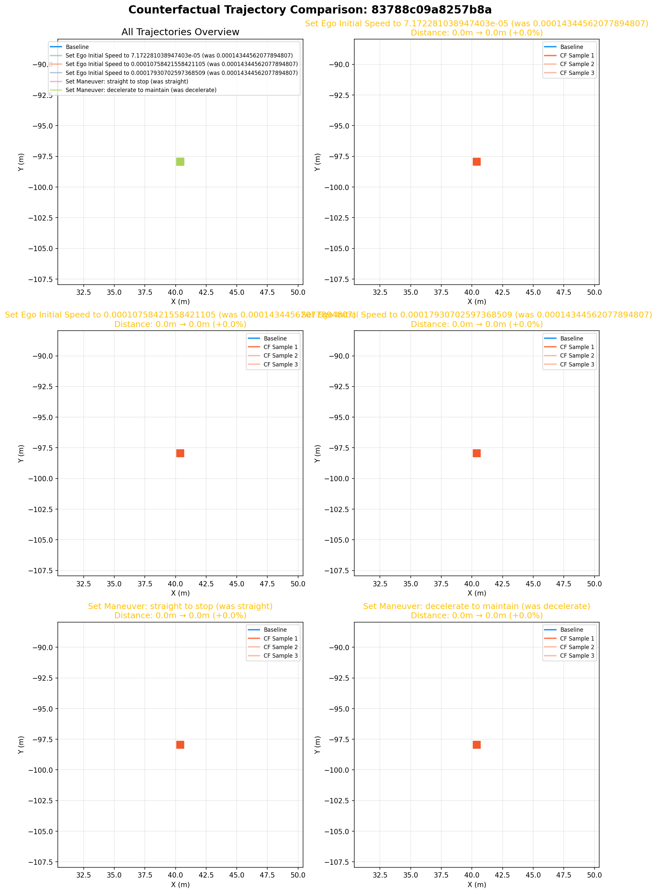
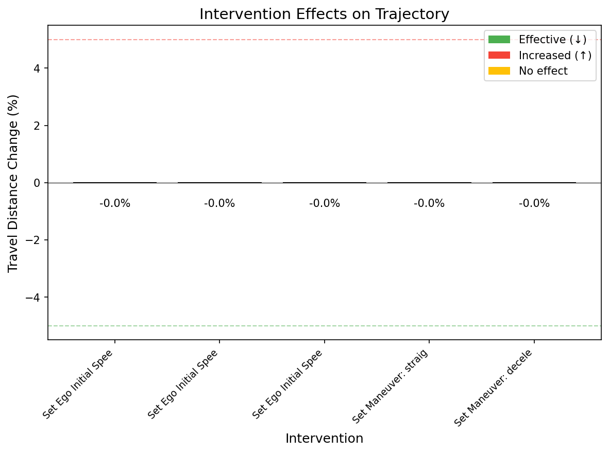

Scenario ID: 83788c09a8257b8a


Layer 0: Ego Initial PositionEgo Initial SpeedEgo Initial HeadingVehicle agent_198Vehicle agent_199Vehicle agent_200Vehicle agent_201Vehicle agent_202
Layer 1: Maneuver: straightManeuver: decelerateManeuver: stopManeuver: straightManeuver: accelerateManeuver: straightDecision: proceed_or_yieldDecision: lane_choiceDecision: gap_acceptance
Layer 2: Collision Outcome
| From | To | Confidence |
|---|---|---|
| ego_initial_position | maneuver_0 | 0.80 |
| ego_initial_speed | maneuver_0 | 0.80 |
| ego_initial_heading | maneuver_0 | 0.80 |
| agent_198_state | decision_0 | 0.70 |
| agent_199_state | decision_0 | 0.70 |
| agent_200_state | decision_0 | 0.70 |
| agent_201_state | decision_0 | 0.70 |
| agent_202_state | decision_0 | 0.70 |
| maneuver_0 | maneuver_1 | 0.90 |
| maneuver_1 | maneuver_2 | 0.90 |
| maneuver_2 | decision_0 | 0.90 |
| decision_0 | maneuver_3 | 0.90 |
| maneuver_3 | maneuver_4 | 0.90 |
| maneuver_4 | maneuver_5 | 0.90 |
| maneuver_5 | decision_1 | 0.80 |
| decision_1 | decision_2 | 0.80 |
| decision_0 | collision_outcome | 0.90 |
| decision_1 | collision_outcome | 0.80 |
| decision_2 | collision_outcome | 0.85 |
| maneuver_0 | collision_outcome | 0.70 |
| Intervention | Mean Distance | Change | Samples |
|---|---|---|---|
| Set Ego Initial Speed to 7.172281038947403e-05 (was 0.00014344562077894807) | 0.0m | +0.0% | 3 |
| Set Ego Initial Speed to 0.00010758421558421105 (was 0.00014344562077894807) | 0.0m | +0.0% | 3 |
| Set Ego Initial Speed to 0.00017930702597368509 (was 0.00014344562077894807) | 0.0m | +0.0% | 3 |
| Set Maneuver: straight to stop (was straight) | 0.0m | +0.0% | 3 |
| Set Maneuver: decelerate to maintain (was decelerate) | 0.0m | +0.0% | 3 |